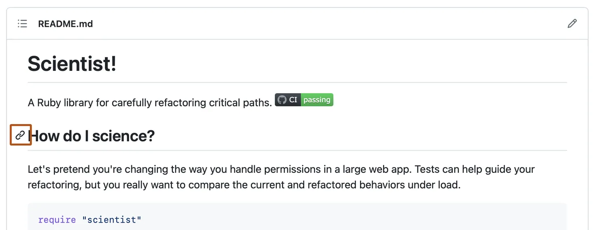
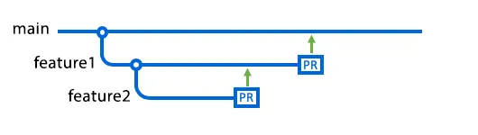

About Readme File
README files introduce a project, explain how to install it, and help others understand how to use or contribute to it.
Read moreA wireframe is a simple visual guide that shows the structure of a webpage before it is built. It helps plan layout and design.

README files introduce a project, explain how to install it, and help others understand how to use or contribute to it.
Read more
A wireframe is a simple visual guide that shows the structure of a webpage before it is built. It helps plan layout and design.
Read more
A branch in Git is a separate line of development that lets you work on new features without changing the main codebase.
Read more